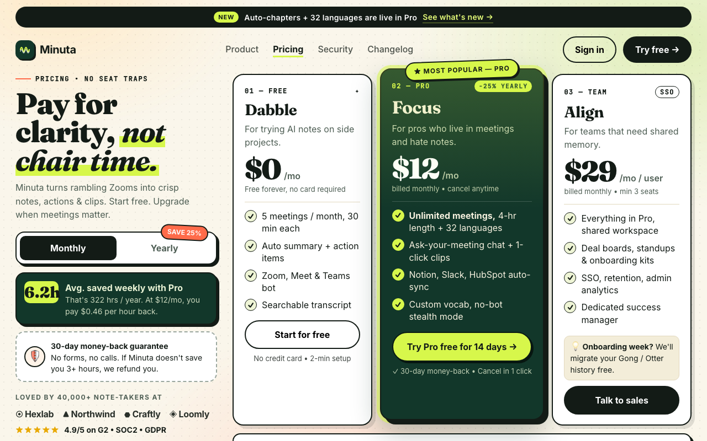

| issue | opened | resolved | attempts | tried |
|---|---|---|---|---|
| Object-shape (LO) and motion (MT) areas are low: a text-first screen with no clear object silhouette | r0 | open | 3 | r1: Added dominant product-window silhouette overlapping Pro plus diagonal lime motion slash i / r3: Replaced product-window idea with one dominant lime disc object with diagonal ink motion-b |
| Place areas (PPA/RSC) dominate: the background scene swallows the message | r0 | open | 3 | r1: Simplified background to single faint wash and put left copy on solid white panel so Pro o / r3: Flattened background to single faint wash, removed color washes/grain and cropped scene in |
| r | ui | brain | judge | kept | changes | sourced photos |
|---|---|---|---|---|---|---|
| r0 | 0.615 | 0.397 | 0.83 | ✓ | ||
| r1 | 0.561 | 0.417 | 0.69 | · | Added dominant product-window silhouette overlapping Pro plus diagonal lime moti; Simplified background to single faint wash and put left copy on solid white pane | |
| r2 | 0.538 | 0.417 | 0.64 | · | Added dominant diagonal lime marquee beam + large floating product-window silhou; Flattened background to single faint wash, removed grain, put left copy on solid | |
| r3 | 0.606 | 0.412 | 0.78 | · | Replaced product-window idea with one dominant lime disc object with diagonal in; Flattened background to single faint wash, removed color washes/grain and croppe |